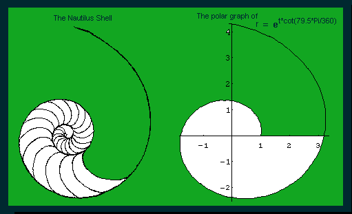

For the Nautilus shell,
 the ratio of
radius vectors
every 360 degrees is a constant, about 3.2. My students average their
mesurements and get pretty close to that (within 10%). The angle
comes out another constant, about 79.5 degrees; this spiral is called an
equiangular spiral because of this. A number of young people have worked
on these problems of the Nautilus shell. Vickie, a 9th grader at the
time, used the half-shell, and studied the volume increase from section
to section. I have a full and half shell in my
"Math Room". The shell is beautiful and mathematical, that's why it is my
logo. The shell on my main web site page is a copy of a watercolor
painting I did of the shell. The rubbing is on the left. The polar equation of the shell spiral is r =
et * cot (79.5*Pi/180) The polar plot of this
equation in Mathematica looks like that at right above. You can see when t
=0, r =1. A 360 degree
turn (t=2*Pi) gives an r of about 3.2, and the Nautilus grows at this constant
ratio throughout (as mentioned above). (See also Frank
Land's book "The Language of Mathematics", Doubleday, 1963).